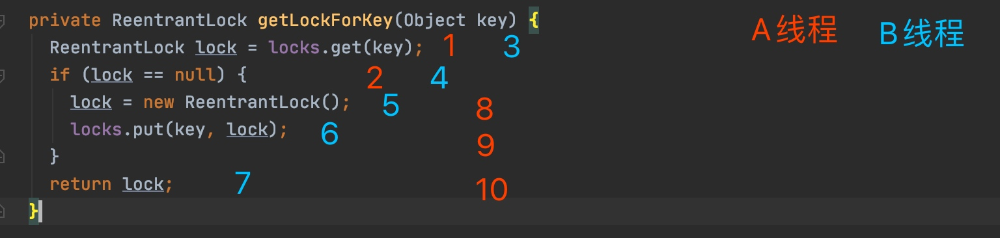

HashMap是线程不安全的，如果我们需要线程安全的使用场景，通常会使用ConcurrentHashMap来代替HashMap来保证线程安全。可是这样就够了吗？
我们用Mybatis源码中的一个例子来说明。
BlockingCache.java
private final ConcurrentHashMap<Object, ReentrantLock> locks;
// MyBatis的这个blocking cache保证同一个时间对于一个查询key只有一个线程可以获得锁。锁放在了locks这个ConcurrentHashMap中。每个线程要操作前需要尝试获取锁。以下就是获取锁的核心逻辑。注意这个方法本身是没有加锁保护的。
private ReentrantLock getLockForKey(Object key) {
ReentrantLock lock = new ReentrantLock();
ReentrantLock previous = locks.putIfAbsent(key, lock);
return previous == null ? lock : previous;
return locks.computeIfAbsent(key, (k) -> new ReentrantLock());
}
关键是这一句
locks.putIfAbsent(key, lock);
putIfAbsent() 是啥作用呢? 按照字面意思，就是如果key不存在，则set，否则不插入。为啥会用这样一个看起来有点复杂的接口呢?如果我们没有熟读ConcurrentHashMap提供的接口，我们可能会这么写：
private ReentrantLock getLockForKey(Object key) {
ReentrantLock lock = locks.get(key); // 从map里读取一下是否key已经存放了
if (lock == null) { // 不存在，则新建一个锁，加入到map中
lock = new ReentrantLock();
locks.put(key, lock);
}
return lock;
}
这段代码是我们日常很有可能写出的逻辑，逻辑清楚，代码也还算简洁。那这段代码会有什么问题呢？

一个有点挫的流程图，来解释一下。这段代码没有同步锁的保护，所以可能有多个线程同一时间都进入了这段代码。A线程先执行了1，2步骤，判断了map中没有key，准备创建线程并添加。这时候发生了线程切换，B线程开始执行这段代码。B线程也去判断map中有没有key，显然也是没有的。然后B线程走完了整个逻辑。然后A线程再一次获取到时间片。最终结果，A线程和B线程都往map中插入了他们自己创建的锁。很明显B线程的锁被覆盖了。
回过头来看一下源码中是怎么写的。
locks.putIfAbsent(key, lock);
源码使用了ConncurrentHashMap的一个接口来达到两个目的，1. 查询一下map中是否包含某个key值。2.不存在则插入。而调用这个接口，ConncurrentHashMap保证了两个步骤的原子性，即要么都做要么都不做。
总结
ConncurrentHashMap虽然是线程安全的，但是用不好一样也会有线程不安全的问题。像这种线程安全的类，他们的单个接口是可以保证线程安全的，但是如果调用了多个接口，又没有用锁来保护，则仍然有可能发生线程不安全的问题。
引申一下，这个问题和Redis用lua脚本来保证多个redis命令的线程安全是有类似的地方。Redis执行单个命令是线程安全的。执行多个组合命令则要使用Lua脚本。这是因为执行Lua脚本命令是安全的。因此可以用Lua脚本来执行多个Redis命令来达到对多个Redis命令的原子性操作。